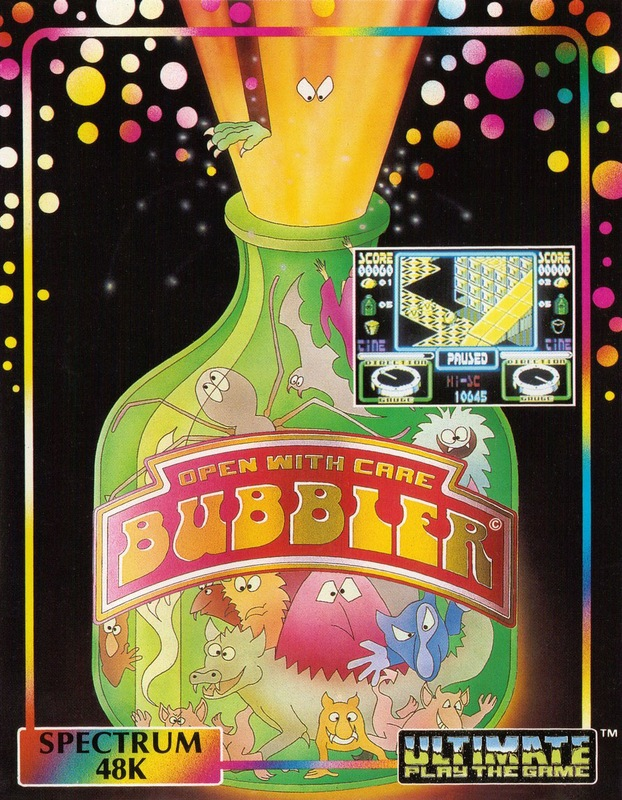
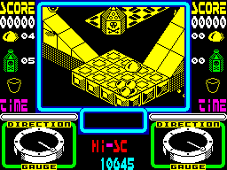

Bubbler


{kind=link}

| Publisher: | Ultimate Play the Game |
| Price: | £9.95 |
| Year: | 1987 |
| Source: | CRASH, Issue 41 |
The inhabitants of the ancient city of Irkon have long been enslaved by the wizard tyrant, Vadra. To further fasten his grip about them he has now created magical bottles — bubblers — which blow mutant-releasing bubbles.
Long ago you spoke out against Vadra, and as a result were imprisoned and converted into an immobile blob. Kintor, one time assistant to Vadra, eventually joins you. Using magical powers, Kintor endows you with temporary movement and the ability to fire lethal energy. Now you have the means to overthrow the evil warlock.

place like this?
The bubblers are plugged by use of magic corks, automatically collected when you pass through one of the prison’s trapdoors. However, some trapdoors are corkless, and entering them leads only to death. With each bottle corked Vadra’s power diminishes, and consequently Kintor’s increases.
Trapdoors and bottles are found by moving along and through the prison’s 3D system of platforms; towers and slopes. You can move forward in a direction defined by rotation to the right or left, and can move up slopes, roll down them under the pull of gravity, jump and catch hoists to higher structures. All manoeuvres must be precise in order to remain on the platforms and pathways, and thus avoid plunging to your death.
As you progress, prison denizens are released from flashing patches around the dungeon, these may kill you outright or try to push you off ledges — other hazards to look out for are weapons towers which fire accurate bursts of energy, and spikes which position themselves underneath as you plummet from a platform. Mystery bubbles are also blown from the bubblers, when popped these release bonus points, alarm clocks (for extra time), extra lives, or bombs. Sharp objects pierce your delicate skin and burst you, if any of your five lives are remaining reincarnation occurs near the killing point.
A time limit is set for the task and should it run out a life is lost. However, time is restored with every new life or corking of a bottle, and increased by collecting alarm clocks. The score, compass, time and lives remaining are displayed at the top and bottom of the screen.
CRITICISM
“Once Ultimate was on a pedestal above all other software companies. Each release saw their cult following fill computer shops all over the country — everybody wanting to see just how far the ACG team had pushed the Spectrum this time. Sadly those glorious times are long since gone, and the once-great company now blends in unremarkably with the rest of the market. Bubbler breaks no new ground. The superbly animated graphics are very appealing, but the 3D perspective isn’t as convincing as that used in previous Ultimate products and the scenery appears disjointed. Those that can master the awkward control method may find a rewarding game, but I’m left with a slight feeling of disappointment.”
PAUL
“I’ve tried really hard to like this, but the lack of playability destroys the effect created by the more enjoyable elements. Like previous ultimate offerings, Bubbler uses the ‘turn and walk’ directional control which may have been fine before but with the addition of inertia and leaping it becomes very imprecise. The compass at the bottom of the screen also confuses matters.”
RICKY
“After a fair amount of practice, Bubbler has turned out to be one of the most playable Marble Madness type games we’ve seen. The graphics are superb, with well animated characters and pretty landscapes which scroll excellently — the title screen is impressive too. The control method is a horrible rotate left or right job, and because of this it takes a while to get used to the game’s workings — however, I’d recommend this as it’s a slick piece of playable programming.”
BEN
COMMENTS
| Control keys: | Z C B M left, X V N SYMBOL SHIFT right, A S D F forward, W R Y I P fire, Q E T U O jump |
| Joystick: | Kempston, Cursor, Interface 2 |
| Use of colour: | Monochromatic playing area |
| Graphics: | Smooth multi-directional scrolling and excellent character definition |
| Sound: | A reasonable title tune, jam-packed with FX |
| Skill levels: | One |
| Screens: | Five scrolling landscapes |
| General rating: | Almost back to Ultimate’s old standard, although mixed reviewer feelings affect the ratings. Well worth it if you can master the awkward control system. |
| Presentation: | 87% |
| Graphics: | 88% |
| Playability: | 74% |
| Addictive qualities: | 82% |
| Value for money: | 71% |
| Overall: | 78% |